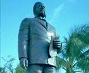

呂清夫 撰文

地球上的島嶼往往都能給人以優美的意象，因為它們都有碧海青天白雲的襯托，所以台灣曾被西人稱為美麗之島，而關島、塞班島、夏威夷群島至今也都是渡假的勝地。不過曾幾何時，台灣由於人口激增，環境惡化，與美麗二字似乎漸行漸遠。如果把夏威夷和台灣做一個比較，那麼夏威夷群島的面積還不到台灣的一半，人口也只有台灣的二十分之一（其中三分之一是白人，四分之一是日本人，剩下的是原住民、華人、韓、菲、葡、西等國人）。但是談到渡假，大家似乎不會想到台灣。這可能因為，夏威夷有美麗的藍天，澄澈的海濱、無數的瀑布、豔麗的花卉、搖曳的棕櫚樹、和善的島民、完整的歷史記憶、及美國最好的治安。不過台灣也有熱情的民眾、高高的檳榔樹、壯麗的高山，只是天空就不那麼藍，治安沒那麼好，古蹟保存也不甚用心……。夏威夷的花卉中，最常見的應是Plumeria，它常被用來做花環，也被用來作為項鍊的墜子造型，這種項鍊於是成了女士們遊夏威夷的最佳紀念品，也是全世界只有夏威夷才有的東西。還有一種較大的花卉叫做Heliconia，有點像天堂鳥，常見它被用在花藝上，在夏威夷現代美術館中，即處處可以看到這種花藝作品，其他的植物也都受到敏銳的感應，只是台灣似乎還沒有把自己的特殊花卉強調出來。不知是不是因為沒什麼美麗可以佇足觀看，所以台灣島民生活都是那麼匆忙。也不知是不是因為太過匆忙，所以島上僅有的美麗也將消失於大家的粗心。比較起來，台灣的生活實在太過匆忙而粗造，例如汽機車便衝得太兇，行人常有四面受敵之感，特別是機車對於行人都沒有起碼的尊重，橫衝直撞，如入無人之境。台北的車道可以說是機車族培養個人主義、英雄主義的溫床。因為巷道毫無限速標誌、人車不分道、偶有人行道反而方便了機車族的抄近路，行人毫無保障。與行人相比，台灣是機車族的天堂，難怪台北烏煙瘴氣，難得看到青天。同屬島國的夏威夷之所以空氣好，沒有摩托車可能是一大原因，摩托車雖然方便，但是付出的社會代價則不為不高，不但製造污染，也帶來危險，全世界大概只有台北跟曼谷有最多的摩托車，其中無不顯示了公共交通的嚴重落伍。夏威夷沒有摩托車，沒有鐵路，也沒有地下鐵，觀光客又多，但是大家仍舊沒有交通的問題，主要是靠發達的公車系統，由於公車太過方便，故連開車族也搭乘公車上學上班，開車只是為了旅遊或買菜。●夏威夷公車保住了夏威夷的美麗夏威夷公車路線繁密，收費低廉，服務周到。他們的公車最近才漲價為一美元，但下車兩小時內換車可以免費，如果下車的地方，找不到你要轉成的公車，你也可以隨便搭個兩、三站，在靠近你要搭的公車站附近下車，再轉乘第三部公車上路。公車車程再長也不分段，有些路線還可以環島一週，車程四小時，同樣只需一美元。夏威夷公車乾淨舒適，冷氣特強，座位前半段都是博愛座，還可以讓輪椅開上去。司機一般都很有耐性，且以原住民居多，遇有老弱婦孺，通常都會忙上一番，碰到老人，司機會馬上按鈕降低入口台階，讓老人輕鬆上車；碰到婦人推著娃娃車，司機則會幫忙推車，讓婦人只抱小孩。遇有觀光客問長問短，也都會停下車仔細說明一番。這種公車其實有點像遊覽車，車快到站時不但會廣播告訴你這是哪一站，還會介紹附近的名勝古蹟或旅館。如果你在山區步行，公車居然會紆尊降貴，在你的身邊停下來，問你要不要搭乘。有不少人喜歡在夏威夷騎單車，每當你騎累了，也可以連同單車一起去搭公車，因為公車前面都設有單車停放架，當你上車時把單車放在架上，當你下車時，就可以拿下來繼續騎你的單車了。與台灣相比，夏威夷是行人與單車族的天堂，不但風景優美、天朗氣輕，可以邊走邊欣賞路上美景，同時真正做到行人優先，因為任何一個十字路口都有按鈕，而且反應敏捷，行人可以很快就等到綠燈。車輛則要不時停停開開，「英雄」不得。其實車輛由機械發動，不需體力，行人則不然，故行人優先跟女士優先同樣，是一種文明的表現。如在弱者前面逞強，實在也算不了什麼英雄了。發達的公車系統保住了夏威夷的美麗，大家不需要自備汽機車來污染空氣、或製造塞車。也不必因為車輛激增需要一天到晚開挖道路，讓青山綠水不時開腸破肚。即使在市區，車道建設也不會是都市景觀的殺手，他們不會為了車道，犧牲了街道的審美要素或歷史記憶，台北林安泰古厝雖然為了車道而淪亡，但是夏威夷的城中區卻保留了全島最多的古蹟，即使是一個小墳墓，也都好端端的保存在街頭！連街道名稱都徹底保留了原住民的風味。● 夏威夷酋長的國際觀夏威夷最有名的道路不是中正路、中山路之類，亦非羅斯福路、麥帥公路之屬，而是土味十足的卡美哈美哈公路、卡拉卡烏阿大道……，其他絕大多數的路名也看不到一點美國風。卡美哈美哈公路是為了紀念夏威夷的統一者，卡拉卡烏阿大道是為了紀念他們的末代皇帝。當初夏威夷群島的諸王各立山頭，卡美哈美哈大帝（一世）驍勇善戰，同時又得到英國人的協助及槍炮的供應，遂在1795年擊敗諸王，開始統一諸島。今天我們在檀香山城中區還可以看到他的金光閃閃的銅像，那是他站在歐胡島的最高點（大風口）高舉右手，鳥瞰群小的英姿。夏威夷的酋長與其他地區不同的是他們具有國際觀，故能帶領島民走向現代化。卡美哈美哈一世不但善於作戰，也長於行政與貿易，1779年英國航海家庫克船長來到夏威夷時，他曾向庫克學到西方的船堅砲利及貿易之道。他曾將火魯奴奴、拉哈依納建設為連接亞洲與美洲的中繼點，並自1810年以後開始把夏威夷產的檀香輸入了中國，獨佔了檀香的貿易，進而使夏威夷成為太平洋的貿易中心。其後繼者卡美哈美哈二世雖然嗜酒如命，但也注意到破除毫無根據的迷信或禁忌（例如男女不得一起吃飯，不能食用香蕉、椰子果），同時廢除古來的法律與宗教，因之，不但瓦解了傳統的階級制度，也使得美國的清教徒得以長驅直入，但相對的也減弱了王朝的氣勢。其次，自1819年起，由於美國船隻在夏威夷海岸捕捉鯨魚，其後夏威夷便成了北太平洋捕鯨船的重要補給站。卡美哈美哈三世雖然十歲即位，但在清教徒傳教士的引導之下，以英國為藍本，進入了君主立憲，1840年還發佈了夏威夷最初的憲法，在國王之下設有內閣、議會、最高法院。但是他後來實施土地改革，使土地私有化成為合法，並由此暗藏了亡國的禍根，因為所謂私有其實都是流入白人手中，島民幾乎得不到好處，這再加上政府的官僚大量採用了白人，遂使事態日趨嚴重。卡美哈美哈四世反美而親英，他想以維多利亞治下的英國為範本來治理夏威夷王國。他和他的皇后都熱中於音樂與歌劇，他們也常親自粉墨登場。這段期間由於美國南北戰爭的關係，捕鯨業宣告衰退，同時由於美國砂糖生產銳減，其不足之處乃求之於夏威夷，遂引起了當地栽培甘蔗的風潮，進而成為當地的主要產業，其不足的人力乃吸引了日本、中國的諸多移民。●珍重再見，末代女王卡美哈美哈一世雖有五個妃子，但其孫子卡美哈美哈五世則終生不娶，因之當他去世的時候，王位繼承便成了問題。夏威夷議會不得已乃透過選舉，推選了當時的有力酋長之一魯那利羅當國王，並由此宣告了卡美哈美哈王朝的落幕，時當西元1873年。不過這個君王也僅在位兩年便告去世，後繼者是曾經與他競選王位的卡拉卡烏阿。這個君王更喜歡音樂，他曾經把夏威夷古來的歌曲翻譯成英文，自己也作詞、譜曲，他和他妹妹莉莉歐卡拉妮同為夏威夷史上最有名的音樂家。莉莉歐卡拉妮就是名曲「珍重再見」的作者，當我們聽到她的「濃密密的烏雲佈滿山巔……」一曲時，似乎可以吟味出這是一個愛好和平的民族，但也可以感覺出這位末代女皇給她的子民的一個最後訊息。卡拉卡烏阿曾經環遊世界，在1875年為了糖業的發展，曾自日本引進了大批的人力，因之，當時已經有二十萬的日本人進到夏威夷，我們在觀光區威基基就可以看到他的銅像（見上圖），這尊銅像的造型作西裝革履的紳士狀，台座上刻滿了上述的事蹟。他也跟美國訂定貿易雙邊條約，並使夏威夷群島與美國本土之間能以蒸汽船來通航，名作家馬克吐溫便曾搭過蒸汽船到過夏威夷。不過，卡拉卡烏阿時代由於對土地不課稅，所以外國人也可以自由購買土地，於是大半的土地都被美國人買走。因之，夏威夷到處是美國人，他們進而想擁有整個夏威夷。卡拉卡烏阿1891年在舊金山逝世，王位由他妹妹莉莉歐卡拉妮繼任。她一直反對美國的勢力在夏威夷的增強，她想重振皇室的權威及夏威夷的文化，並建立屬於夏威夷人的夏威夷，因之很受島民的愛戴。但與她敵對的是住在夏威夷的美國人，他們又祕密組成一個屬於統派的「統一聯盟」來與她對抗，美國人甚至還對她發動暗殺與綁架行動，這些人多半是夏威夷的企業家或大地主。至1893年，雙方終於不免一戰，統派人士於是武裝起來發動政變，進逼了檀香山的城中區，最後佔領了政府主要的建築物。女王只好宣佈退位，同年夏威夷王國宣告滅亡。●要得民心就要尊重他們的文化只是當年的皇宮伊歐拉尼宮還完好的保留到今天，成為美國境內唯一的皇宮，它被建在伊歐拉尼花園之內，是一座巴洛克式的宮殿，當政變伊始，女皇即被美國人軟禁於此。我們今天在此花園中只看到芳草如茵，古木蒼天，一片幽雅，白天的宮殿內外也處處開著燈光，倍顯宮殿的壯麗，但是當年卻是女皇乃至夏威夷人的傷心欲絕之地。花園中還可看到「加冕典禮台」，乍看好似別出心裁的涼亭，當年卻是為卡拉卡烏阿的加冕典禮而建的，今天這裡的每個週末都會有一場免費的音樂會，由夏威夷皇家樂團擔任演出古典音樂或「珍重再見」等樂曲。至於莉莉歐卡拉妮的雕像則矗立在皇宮附近的州政府庭園之內，隨時可以看到鮮花佈滿跟前。州政府的門口則矗立著一尊造型奇特的戴明神父像，所謂奇特主要是因為整個銅像幾乎被處理成直立的木箱，只有頭、腳露出來，雙眼特別有神，這種造型主要是用來刻劃一生（1873年逝世）都獻給夏威夷痲瘋病患的偉人之堅毅性格。1894年夏威夷成立共和國，1900年納入美國領土，1959年成為美國的第五十州。不過也有人不願承認這個事實，所以有人說它是最不美國化的美國領土。同時群島中還有一個尼豪島直至今天都是私人島，由魯賓孫氏所有，他讓島民一直生活在與世隔絕的境界中，成為真正的化外之民，外人也禁止進入，島內並以夏威夷語為第一個正式語言。不幸中之大幸者應說是，夏威夷雖然落入外來政權，但因為主政者是強盛的美國，所以對於原來的文化徹底尊重，夏威夷的拼音文字便是傳教士幫他們建立的，美國人在夏威夷不但沒有亂改路名，王朝時代的皇宮都保存得非常好，過去的政治銅像更沒有一個被推倒，反而倒有增加，如卡拉卡烏阿像即為新設，美國人就是有自信不怕夏威夷人的緬懷過去。有人說，要毀滅一個民族就先毀滅她的文化，其實應說，要得民心就要尊重他們的文化！